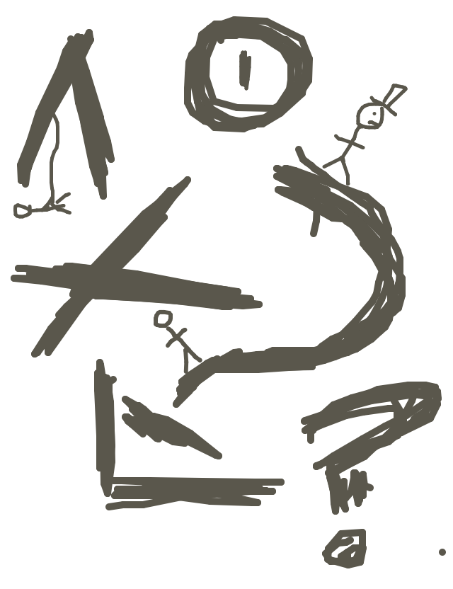
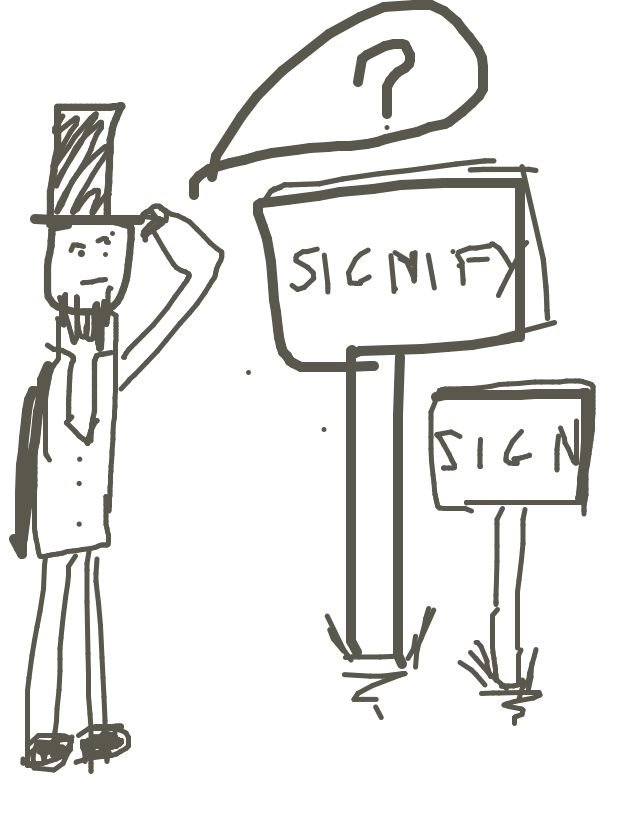
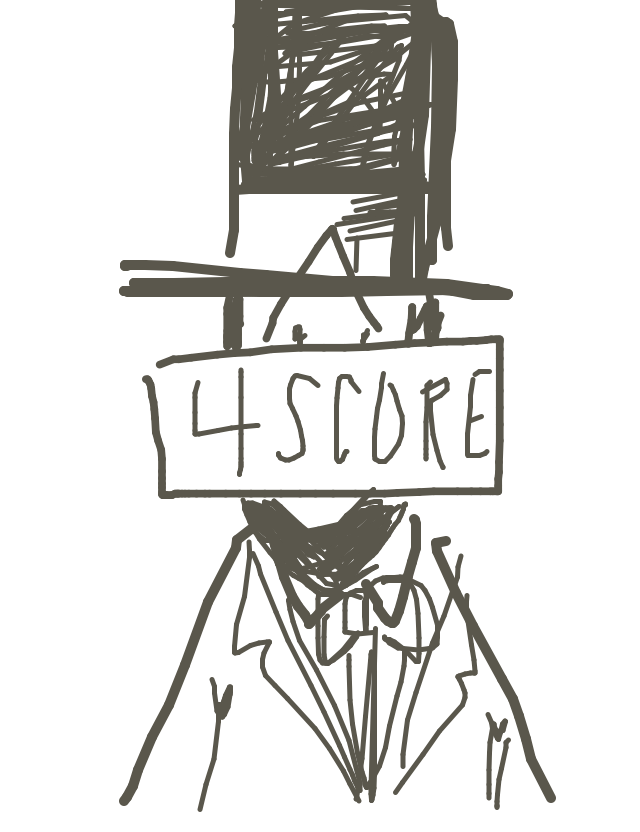
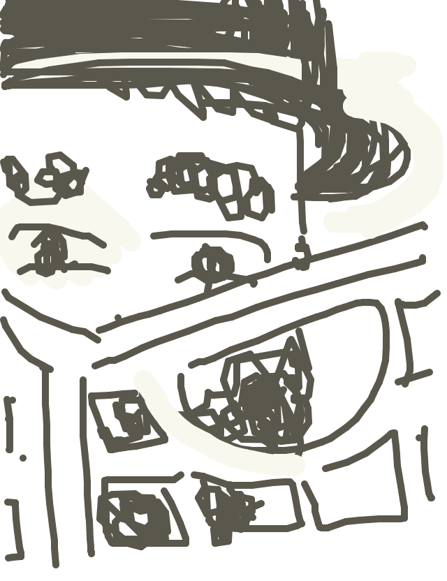

so rickyc drew...
so alexander wrote...
What is sign and what is signified? Abraham Lincoln, on his stroll, doesn't know.
so samusb drew...
so nic wrote...
Lincoln thought they took his request for signs a little too literally.
so frank drew...
so dianakimball wrote...
President Lincoln peered out from a milk crate.
so john drew...
so dubbin wrote...
"No, even closer," said the creepy man on the bench to the even creepier cameraman.